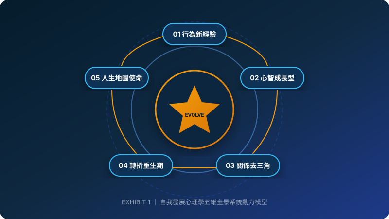

EXHIBIT 1 ｜ 自我發展心理學五維系統模型
為什麼我總覺得自己意志力薄弱、立了志向卻總是無法堅持？陳海賢指出：問題不在你懶，而是你的心理操作系統還停留在舊版本。
將自我視為一套動態演化複雜系統，包含行為、認知、關係、轉折與生命發展五大層次，牽一髮動全身。
🎙️ 三段式顧問演講備忘錄 (Speaker Notes ｜ 快捷鍵 N 開關)
① 本頁核心結論 (Conclusion)：
自我發展的核心不是修正個人缺陷，而是升級心理系統架構。
② 顧問深度脈絡 (Context)：
本份簡報萃取陳海賢博士 50 講精華，以頂尖顧問標準製作。
③ 下一頁轉場 (Transition)：
首先，讓我們透過全景架構圖，鳥瞰五大維度。